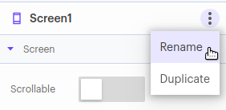
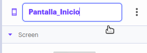
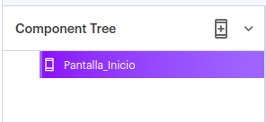
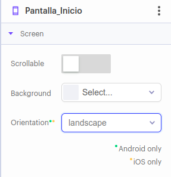
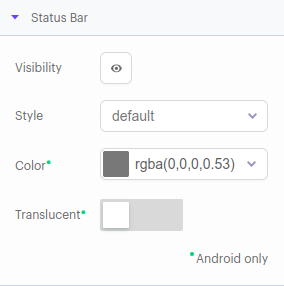
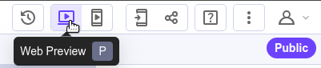

Una vez que hemos creado el proyecto, se mostrará una pantalla similar a la siguiente:

Como podemos observar, se divide en tres partes:
- Componentes (izquierda)
- Aplicación (centro)
- Características de la pantalla (derecha)
En este ejercicio nos centraremos en las características de la pantalla (parte derecha). Sigue los siguientes pasos para personalizar nuestra pantalla.
1. Cambiar el nombre de la pantalla
Por defecto la pantalla se llama Screen1. Vamos a cambiarle el nombre a Inicio. Para ello, pulsa sobre los tres puntos que hay junto al nombre inicial (Screen1) y selecciona la opción Rename:

Cambiamos el nombre por pantalla de inicio:
Cuando aceptemos podremos ver que en la parte izquierda también se ha cambiado el nombre:

2. Cambiar la configuración básica
En la siguiente pantalla podemos cambiar tres elementos. Junto a cada uno de estos elementos se indica si está soportado para aplicaciones Android e iOS:

- Scrollable: si se permite que en la aplicación se haga scroll
- Background: para cambiar el color de fondo
- Orientación:
- Portrait (vertical)
- Landscape (horizontal)
- Auto (se cambie automáticamente)
3. Modificar las características de la barra de estado
En esta imagen podemos observar qué elementos podemos modificar de la barra de estado:

- Visibility: si se muestra o no
- Style: con tres posibles valores
- Por defecto: default
- Modo claro: light-content
- Modo oscuro: dark-content
- Color
- Translucent: si queremos que la barra de estado sea translúcida o no
Si pulsas en el botón Preview podrás ver una previsualización de la aplicación:
